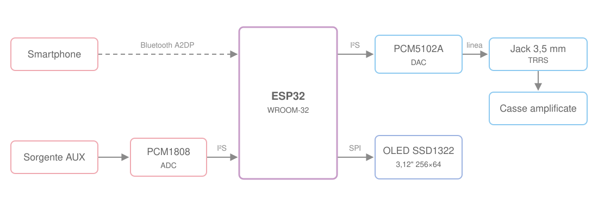

Collegamenti
Secondo le specifiche delle schede ricevute il 21/10/2026.
È lo schema di riferimento per costruire il dispositivo. Il firmware attuale (branch main)
non lo segue ancora del tutto: le differenze sono nel confronto con il firmware attuale.

1. PCM5102A – Uscita audio
| PCM5102A | ESP32 |
|---|---|
| VIN | 5V |
| GND | GND |
| BCK | GPIO 26 |
| LCK | GPIO 33 |
| DIN | GPIO 21 |
Il pin SCK del modulo non compare nello schema: resta non collegato, come nel montaggio attuale,
e il PCM5102A ricava il clock interno dal BCK.
2. PCM1808 – Ingresso audio
| PCM1808 | ESP32 |
|---|---|
| VCC | 5V |
| GND | GND |
| BCK | GPIO 26 |
| LRCK | GPIO 33 |
| DOUT | GPIO 35 |
3. Display OLED SSD1322 – SPI 4 fili
| SSD1322 | ESP32 |
|---|---|
| VCC | 3V3 |
| GND | GND |
| SCK / CLK | GPIO 18 |
| SDA / MOSI | GPIO 23 |
| CS | GPIO 5 |
| DC | GPIO 19 |
| RST | GPIO 4 |
4. Jack TRRS – Ingresso audio
| Jack | PCM1808 |
|---|---|
| L | LIN |
| R | RIN |
| GND | AGND |
| MIC | non collegato |
5. Relè DPDT – Selezione uscita audio
| Relè | Collegamento |
|---|---|
| COM1 | Jack uscita L |
| COM2 | Jack uscita R |
| NC1 | PCM5102A L |
| NC2 | PCM5102A R |
| NO1 | Audio pass-through L |
| NO2 | Audio pass-through R |
| IN | GPIO 27 (proposto) |
| VCC | 5V (se compatibile) |
| GND | GND |
A relè non eccitato (contatti NC) il jack di uscita riceve il DAC PCM5102A; con il relè eccitato riceve il segnale di pass-through.
Riepilogo GPIO ESP32
| GPIO | Funzione |
|---|---|
| GPIO 4 | OLED RST |
| GPIO 5 | OLED CS |
| GPIO 18 | OLED SCK |
| GPIO 19 | OLED DC |
| GPIO 21 | PCM5102A DIN |
| GPIO 23 | OLED MOSI |
| GPIO 26 | I²S BCK condiviso |
| GPIO 27 | Comando relè (proposto) |
| GPIO 33 | I²S LRCK condiviso |
| GPIO 35 | PCM1808 DOUT |
Note tecniche
I²S condiviso tra ADC e DAC
- PCM1808 e PCM5102A usano gli stessi BCK (GPIO 26) e LRCK (GPIO 33): l'ESP32 genera i clock e i due convertitori lavorano alla stessa frequenza di campionamento e con lo stesso formato. Quando tornerà il Bluetooth A2DP (di solito a 44,1 kHz), anche l'ADC girerà alla frequenza della sorgente Bluetooth.
- Un pin può essere pilotato da una sola periferica, quindi i due driver I²S master separati del firmware attuale
non vanno bene su questi pin. Le strade possibili sono una sola porta (
I2S_NUM_0) in full duplex, conI2S_MODE_TX | I2S_MODE_RX,data_out_num = 21edata_in_num = 35, oppure TX master e RX slave sugli stessi BCK/LRCK. La prima è la più semplice. - GPIO 35 è solo ingresso e non ha pull-up/pull-down interni: va bene per DOUT del PCM1808 (dati verso l'ESP32).
Clock di sistema del PCM1808
Lo schema non indica il pin SCKI (nel modulo SCK) del PCM1808. Il PCM1808 non funziona
senza un clock di sistema a 256, 384 o 512 volte la frequenza di campionamento, sincrono con BCK e LRCK.
Nel firmware attuale arriva dall'MCLK dell'ESP32 su GPIO 0. Sull'ESP32 l'MCLK può uscire solo
su GPIO 0, 1 o 3, e GPIO 1 e 3 sono la seriale USB: GPIO 0 resta l'unica scelta. Nello schema è libero
(il DC del display non è più su GPIO 0, come nel vecchio firmware A2DP).
Pin di configurazione del PCM1808
Lo schema non cita nemmeno MD0, MD1, FMT e il pin 3,3 V del modulo.
Nel cablaggio usato finora con il firmware attuale sono così: MD0, MD1 e FMT
a GND (PCM1808 slave, formato I²S), 3.3V a 3V3 e +5V a 5V.
Display
- Rispetto al vecchio firmware A2DP il DC passa da GPIO 0 a GPIO 19 e il reset non è più fisso a 3V3 ma su GPIO 4.
Con U8g2 il costruttore diventa
U8G2_SSD1322_NHD_256X64_F_4W_HW_SPI u8g2(U8G2_R0, /*cs=*/ 5, /*dc=*/ 19, /*reset=*/ 4);. - SCK e MOSI sono i pin VSPI di default dell'ESP32 (18 e 23), quindi si può usare lo SPI hardware.
Relè
- Il GPIO non può alimentare la bobina di un relè: serve un modulo relè con transistor di pilotaggio e diodo (o un transistor e un diodo di ricircolo esterni).
- "VCC 5V (se compatibile)": con un modulo a 5 V bisogna verificare che l'ingresso
INcommuti con i 3,3 V dell'ESP32 e se è attivo alto o attivo basso. - GPIO 27 non è un pin di strapping: all'avvio il relè resta a riposo e l'uscita è quella del DAC.
- Commutare il relè con l'audio presente può produrre un "clic": conviene mettere in muto l'uscita
(in firmware o con il pin
XSMTdel PCM5102A) durante il cambio.
Jack TRRS
Nei jack TRRS la posizione di GND e MIC cambia tra lo standard CTIA (MIC sul manicotto) e OMTP (GND sul manicotto): va verificato quale polo è GND sul jack usato prima di collegarlo ad AGND.
Pin di strapping
Lo schema non usa più GPIO 2 e 15 (BCK e LRCK del PCM1808 nel firmware attuale), che sono pin di strapping. Restano GPIO 5 (CS del display, a riposo alto, compatibile con l'avvio) e GPIO 0 (verso SCKI del PCM1808, che è un ingresso ad alta impedenza e non porta GPIO 0 basso all'avvio, quindi non forza la modalità download).
Confronto con il firmware attuale
src/main.cpp sul branch main usa questi pin
(dettagli nella pagina del firmware attuale):
| Segnale | Schema | Firmware attuale |
|---|---|---|
| PCM5102A BCK / LRCK / DIN | GPIO 26 / 33 / 21 | GPIO 26 / 33 / 21 (uguali) |
| PCM1808 BCK | GPIO 26 (condiviso) | GPIO 2 (IN_BCK) |
| PCM1808 LRCK | GPIO 33 (condiviso) | GPIO 15 (IN_LRCK) |
| PCM1808 DOUT | GPIO 35 | GPIO 16 (IN_DOUT) |
| PCM1808 SCKI (MCLK) | non indicato | GPIO 0 (IN_MCLK) |
| Porte I²S | una, BCK/LRCK condivisi | due master: I2S_NUM_0 RX e I2S_NUM_1 TX |
| Display SSD1322 | GPIO 18, 23, 5, 19, 4 | non presente |
| Relè | GPIO 27 | non presente |
Per seguire lo schema il firmware deve passare a un I²S condiviso (vedi le note tecniche), spostare il PCM1808 su GPIO 26/33/35 e aggiungere display e relè.
Punti aperti
Da chiarire con chi ha fornito le specifiche:
- Pin
SCKIdel PCM1808: confermare GPIO 0. MD0,MD1,FMTe alimentazione 3,3 V del modulo PCM1808.- Da dove arriva il segnale "Audio pass-through" sui contatti NO del relè (per esempio direttamente dal jack di ingresso).
- GPIO 27 per il relè è "proposto": confermarlo, insieme al modulo relè (tensione, livello logico, attivo alto o basso).
- Standard (CTIA o OMTP) del jack TRRS di ingresso.
- Massa del jack di uscita: lo schema collega solo L e R tramite il relè, va indicato dove va il GND del jack (per esempio ad AGND del PCM5102A).